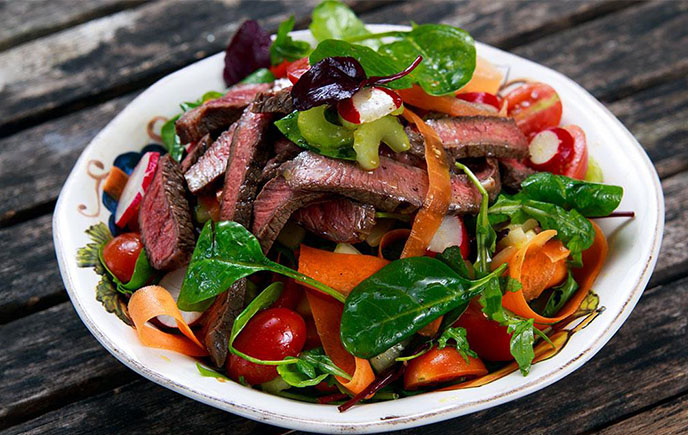

Salteado de carne de res
- 2 dientes de ajo
- 2 cucharadas de salsa de soya
- 5 tazas de vegetal surtido.
- 1/4 taza de maní tostado
- Tomillo seco o las hierbas que prefieras (romero, orégano…).
- 1 libra de solomillo de res
- 1/2 taza de aceite
- 1 cucharada de maicena
- 1/2 taza de vinagre balsámico
- 1 cucharadita de jengibre
Preparación
- Mezclar la carne de res con 1 cucharada del aderezo y el ajo.
- Añadir la fécula de maíz y mezclar bien.
- Calentar una sartén grande antiadherente rociada con aceite a fuego medio-alto./li>
- Agregar la mezcla de carne y rehogarla durante 3 minutos o hasta que esté bien cocida.
- Retirar la carne de la sartén y taparla para mantenerla caliente.
- Agregar los vegetales surtidos frescos cortados en trocitos, la salsa de soya, el jengibre en polvo y el resto del aderezo a la sartén.
- Rehogar los vegetales durante 5 minutos o hasta que estén tiernos y crujientes.
- Volver a colocar la carne en la sartén y revolverla de vez en cuando por 1 minuto o hasta que esté bien caliente y la salsa se haya espesado.